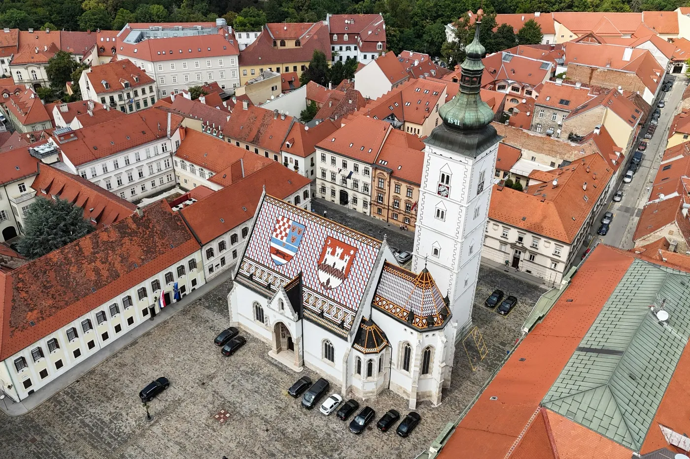
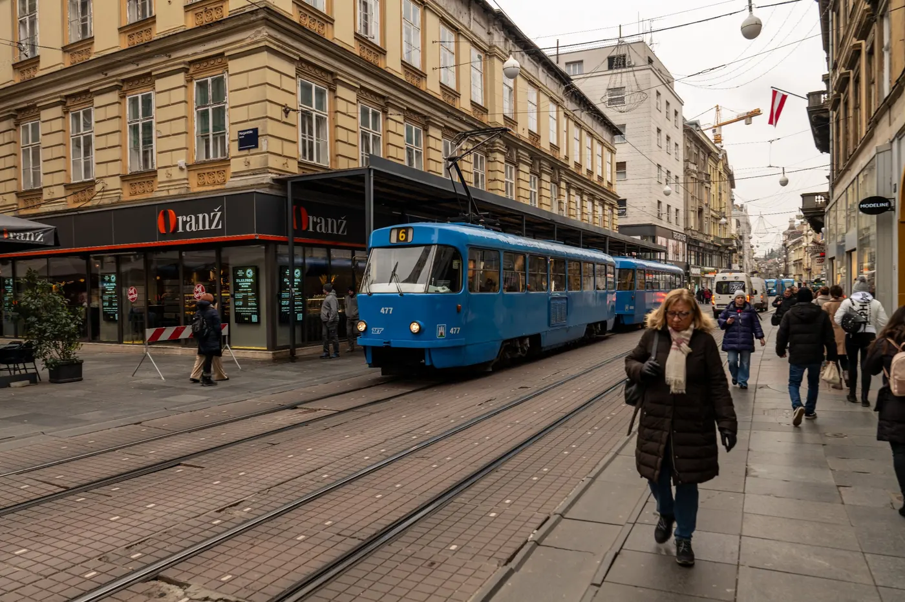

Vodiči / Zagreb
Zagreb — kad ići, aerodrom, šta obavezno vidi

Ovaj vodič je pisan za goste koji prvi put dolaze u Zagreb — bilo da je grad krajnja destinacija ili usputna stanica na putu ka moru.
Kad doći u Zagreb — najbolje vreme za grad
Proleće (april-jun) i rana jesen (septembar-oktobar) su najprijatniji za šetnje kroz Gornji grad i sedenje na otvorenom u Zrinjevcu. Leto donosi toplije dane i priliku za kupanje na jezeru Jarun, ali centar tada zna biti tiši jer se lokalci sele ka moru. Decembar je poseban razlog za posetu — Advent u Zagrebu je više puta proglašavan najboljom božićnom pijacom u Evropi, sa kućicama, klizalištima i toplim vinom po celom centru, ali i sa najvećim gužvama i cenama smeštaja u godini.
Aerodrom Zagreba i put do centra grada
Aerodrom Franjo Tuđman je oko 17 km jugoistočno od centra. Shuttle autobus Pleso prijevoza vozi direktno do Glavnog autobusnog kolodvora, polazi u ritmu letova otprilike na 30 minuta, traje 35-45 minuta i košta 8€ (plaća se karticom u autobusu); sa kolodvora do Trga bana Jelačića ima još par stanica tramvajem. Gradski ZET autobus je jeftinija opcija (oko 1-1,3€ preko aplikacije ili na kiosku) ali sporija i sa presedanjem. Taksi sa aerodroma ima fiksnije cene po zonama, obično 25-40€ do centra, dok Uber ili Bolt često izađu jeftinije, oko 10-20€.
Koliko košta izlazak u Zagrebu — orijentacione cene
- Gornji grad i Kamenita vrata — obilazak je besplatan; ulaznica se plaća samo za pojedine muzeje (npr. Muzej prekinutih veza, oko 8-9€).
- Štrukli ili purica s mlincima — 10-15€ po osobi u tradicionalnom restoranu.
- Kafa na Tkalčićevoj — 2,5-4€, uz to se u zagrebačkim kafićima po tradiciji dugo sedi bez žurbe.
- Kremšnita u poslastičarnici — 3-4€ po komadu.
Šta obavezno vidi u Zagrebu za 2-3 dana
- Gornji grad — istorijsko jezgro sa Crkvom svetog Marka (prepoznatljiv šareni krov), Kamenim vratima i Lotrščakom kulom.
- Trg bana Jelačića i Dolac pijaca — glavni gradski trg i najživlja gradska pijaca, odmah iznad njega.
- Zagrebačka katedrala — najviša zgrada u Hrvatskoj, na Kaptolu, blizu Dolca.
- Tkalčićeva ulica — pešačka ulica puna kafića i barova, centar večernjeg izlaska.
- Uspinjača — jedan od najkraćih funikulera na svetu, povezuje Gornji i Donji grad za par desetina sekundi.

Gde jesti u Zagrebu — lokalna kuhinja
Osnova zagrebačke trpeze su štrukli (slani ili slatki, sa sirom i vrhnjem) i purica s mlincima, tradicionalno nedeljno jelo. Zagorski kraj u okolini grada poznat je po domaćoj kobasici i grahu, a za dezert obavezno probaj kremšnitu — samoborska verzija se smatra najboljom u zemlji. Dolac pijaca je odlično mesto za sveže sastojke i brz zalogaj, dok je Tkalčićeva najživlja za večernji izlazak uz sve više kraft pivnica.
Skrivena mesta u Zagrebu van glavnih ruta
- Britanski trg — nedeljna buvlja pijaca sa starinama, omiljena kod lokalaca.
- Mirogoj — jedno od najlepših grobalja u Evropi, arkade i kupole u parkovskom okruženju.
- Jezero Jarun — omiljeno mesto lokalaca leti, sa stazama za trčanje i barovima uz vodu.
- Medvednica — planina odmah iznad grada, dostupna žičarom, dobra za popodnevni izlet i pogled na ceo Zagreb.
Praktični saveti pre puta
- Dokumenta — Hrvatska je u EU i Šengenu; za dolazak iz drugih šengenskih zemalja nema granične kontrole.
- Valuta — evro (€); kartice se prihvataju gotovo svuda, ali je dobro nositi nešto keša za pijace i manje kafiće.
- Gradski prevoz — tramvaji i autobusi ZET-a pokrivaju ceo grad; centar (Gornji i Donji grad) se najbolje obilazi peške.
- Advent u decembru — ako dolaziš tokom božićne pijace, rezerviši smeštaj mnogo unapred jer cene i potražnja tada naglo rastu.